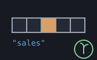

A reckoner seed: recio, over a resource held by name — machines/seeds/seedrecio.shoddy

seedrecio is the first seed that opens
something. Every other seed in the directory takes values off the
stack and puts values back; this one opens a file, keeps it open across
lines, and shuts it when told:
RECOPEN RECCOUNT RECFIELDS RECGET RECALL RECPUT RECAPPEND.
That was impossible until reckoner grew a
table of named resources. A handle must never reach the stack, because
UNDO restores the stack and the number naming an open file
would go with it. A name cannot be dropped, overwritten or undone
away — so RECOPEN binds one and nothing ever pushes the
handle.
What a session holds is therefore a string.
"sales" RECCOUNT asks the file bound under
"sales" how many records it has. CLOSE and
BOUND are reckoner's own words and work here without this seed
saying anything about them — and there is deliberately no
RECCLOSE, because one way to shut a resource is the whole
reason the table is uniform.
The layout problem, and the shape of the answer.
recio asks for a record size and a reader/writer
pair over the caller's own Type:
Def rdstudent(f As Number) As Student
Student(GetStr(f, 12), GetNum(f))A host program writes those and compiles them in. A session cannot:
there is no Type at a prompt and no way to write a
Def there that the compiler has already seen. So this seed
supplies one generic reader and one generic writer, and
drives them from a schema the session types — a list of
field specs:
{ { "id" "number" } { "name" "str" 12 } { "paid" "bool" } }Three kinds, because three are what the runtime transfers: a number is
eight bytes, a boolean is one, and a string is a fixed zero-padded field
whose width the spec carries. The record size is the sum, computed once at
RECOPEN and kept with the binding, so no later word can
disagree with the file about it.
A record is a plain list, in schema order —
{ 3 "GRACE" True } — and not a dict. A dict would be truer to
the schema and worse to type: a session that has to build
{ ("id" 3) ("name" "GRACE") } to write one row will not write
many. The names live in the schema, RECFIELDS answers them,
and a session that wants a dict has seeddict's
own words to make one.
Every read is pre-flighted. GetNum,
GetBool and GetStr all abort past the end of the
file, and a bridged word must not be able to abort the session. So no read
happens until the record number has been checked against the count. A file
whose length is not a whole number of records is refused at
RECOPEN rather than at the first read — that is a fact about
the file and the schema together, and the moment they first meet is the
earliest honest place to say it.
A row is checked before any of it is written. A record
half-written is a record corrupted, and PutStr aborts on a
string longer than its field rather than truncating. So the whole row is
validated against the schema first — count, kind and string width, each
refusal naming which field — and the transfer only starts once nothing can
refuse.
RECPUT may extend by exactly one.
Seek can go anywhere, so writing record 900 of a three-record
file would leave a hole of undefined bytes that reads back as garbage
rather than as an error. One past the end is an append; anything further is
refused, naming the furthest write allowed.
> "sales.dat" { { "id" "number" } { "who" "str" 12 } { "paid" "bool" } } "db" RECOPEN
ok: opened db
[ empty ]
> "db" { 1 "GRACE" True } RECAPPEND
x: 1
> DROP "db" { 2 "ADA" False } RECAPPEND DROP
[ empty ]
> "db" RECCOUNT
x: 2
> "db" 1 RECGET
x: { 1 "GRACE" True }
> "db" RECALL
x: { { 1 "GRACE" True } { 2 "ADA" False } }
> BOUND
x: { ( "db" "recio" ) }
> "db" CLOSE
ok: closed db
[ empty ]The file survives UNDO. Wind the stack all the way back and
"db" RECCOUNT still answers — and still answers the records
that were written, because UNDO restores a stack and does not
un-write a file.
| Word | Description |
|---|---|
| RECOPEN ( path schema name -- ) | Open a binary record file and keep it open under that name. The schema is a list of { name kind } specs, kind being "number" or "bool", or "str" with a width. Makes the file if it is not there. CLOSE shuts it; BOUND lists what is open. |
| RECCOUNT ( name -- n ) | How many records the file bound under that name holds. |
| RECFIELDS ( name -- list ) | The field names of that file's schema, in the order a record lists them. |
| RECGET ( name k -- rec ) | Record k, as a list of values in schema order. Records number from 1. |
| RECALL ( name -- list ) | Every record in file order, each one a list of values in schema order. |
| RECPUT ( name k rec -- ) | Write rec as record k, replacing what was there. k may be one past the end, which adds a record; anything beyond that is refused. |
| RECAPPEND ( name rec -- k ) | Add rec to the end and push the record number it became. |
| User | How | |
|---|---|---|
| halifax | The calculator's record-file words — the first resource a halifax session can open, write to and close. | |
| seedisam | The schema language and its reader, writer and row checks — so an indexed table and a flat record file agree about what a field spec means. |
A mill claims this seed by folding RckSeedRecio over its
reckoner state, which is all halifax does.
| Machine | Why | |
|---|---|---|
| recio | The domain this seed bridges: RecSeek and the record offset arithmetic, driven by a schema instead of a compiled reader and writer. | |
| cuttle | The Cell type a record's values cross the bridge as. | |
| reckoner | RckReg and the argument readers, and the named-resource table — RckBind, RckBoundTo, RckResOf — that makes an open file reachable after UNDO. | |
| seq | List plumbing under the schema reader and the row checks. |